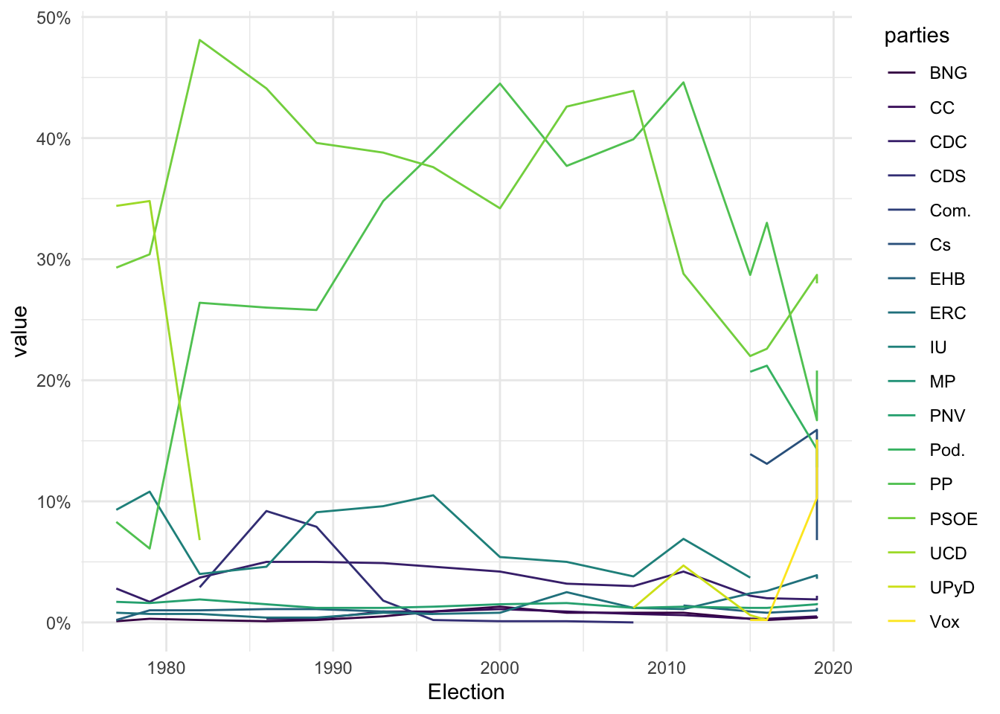

# install.packages("devtools")
# devtools::install_github("cimentadaj/scrapex")
# install.packages(c("httr2", "xml2", "rvest"))A primer on Webscraping
library(scrapex)
library(rvest)
library(httr)
library(dplyr)
Attaching package: 'dplyr'The following objects are masked from 'package:stats':
filter, lagThe following objects are masked from 'package:base':
intersect, setdiff, setequal, unionlibrary(tidyr)
library(stringr)
library(ggplot2)
link <- history_elections_spain_ex()
link[1] "/Library/Frameworks/R.framework/Versions/4.5-arm64/Resources/library/scrapex/extdata/history_elections_spain//Elections_Spain.html"browseURL(prep_browser(link))This opens the link and saves a local copy.
set_config(
user_agent("Mozilla/5.0 (Macintosh; Intel Mac OS X 10_15_7) AppleWebKit/537.36 (KHTML, like Gecko) Chrome/144.0.0.0 Safari/537.36; Amelia Shuler / amelia.b.shuler@gmail.com")
)
html_website <- link %>% read_html()
html_website{html_document}
<html class="client-nojs" lang="en" dir="ltr">
[1] <head>\n<meta http-equiv="Content-Type" content="text/html; charset=UTF-8 ...
[2] <body class="mediawiki ltr sitedir-ltr mw-hide-empty-elt ns-0 ns-subject ...all_tables <-
html_website |>
html_table()This takes all the tables from the webpage and puts them in a tibble.
elections_data <- all_tables[[5]]
elections_data# A tibble: 16 × 18
Election `UCD[a]` PSOE `PP[b]` `IU[c]` `CDC[d]` PNV `ERC[e]` `BNG[f]`
<chr> <chr> <dbl> <dbl> <chr> <dbl> <dbl> <dbl> <dbl>
1 Election "" NA NA "" NA NA NA NA
2 1977 "34.4" 29.3 8.3 "9.3" 2.8 1.7 0.8 0.1
3 1979 "34.8" 30.4 6.1 "10.8" 1.7 1.6 0.7 0.3
4 1982 "6.8" 48.1 26.4 "4.0" 3.7 1.9 0.7 0.2
5 1986 "Dissolved" 44.1 26 "4.6" 5 1.5 0.4 0.1
6 1989 "Dissolved" 39.6 25.8 "9.1" 5 1.2 0.4 0.2
7 1993 "Dissolved" 38.8 34.8 "9.6" 4.9 1.2 0.8 0.5
8 1996 "Dissolved" 37.6 38.8 "10.5" 4.6 1.3 0.7 0.9
9 2000 "Dissolved" 34.2 44.5 "5.4" 4.2 1.5 0.8 1.3
10 2004 "Dissolved" 42.6 37.7 "5.0" 3.2 1.6 2.5 0.8
11 2008 "Dissolved" 43.9 39.9 "3.8" 3 1.2 1.2 0.8
12 2011 "Dissolved" 28.8 44.6 "6.9" 4.2 1.3 1.1 0.8
13 2015 "Dissolved" 22 28.7 "3.7" 2.2 1.2 2.4 0.3
14 2016 "Dissolved" 22.6 33 "[k]" 2 1.2 2.6 0.2
15 Apr. 2019 "Dissolved" 28.7 16.7 "[l]" 1.9 1.5 3.9 0.4
16 Nov. 2019 "Dissolved" 28 20.8 "[l]" 2.2 1.6 3.6 0.5
# ℹ 9 more variables: `EHB[g]` <chr>, `CDS[h]` <chr>, `CC[i]` <dbl>,
# UPyD <chr>, Cs <chr>, Com. <chr>, `Pod.[j]` <dbl>, Vox <dbl>, MP <dbl>This gets the 5th table, which is the one we want.
elections_data |> select_if(is.character)# A tibble: 16 × 8
Election `UCD[a]` `IU[c]` `EHB[g]` `CDS[h]` UPyD Cs Com.
<chr> <chr> <chr> <chr> <chr> <chr> <chr> <chr>
1 Election "" "" "" "" "" "" ""
2 1977 "34.4" "9.3" "0.2" "" "" "" ""
3 1979 "34.8" "10.8" "1.0" "" "" "" ""
4 1982 "6.8" "4.0" "1.0" "2.9" "" "" ""
5 1986 "Dissolved" "4.6" "1.1" "9.2" "" "" ""
6 1989 "Dissolved" "9.1" "1.1" "7.9" "" "" ""
7 1993 "Dissolved" "9.6" "0.9" "1.8" "" "" ""
8 1996 "Dissolved" "10.5" "0.7" "0.2" "" "" ""
9 2000 "Dissolved" "5.4" "Boycotted" "0.1" "" "" ""
10 2004 "Dissolved" "5.0" "Banned" "0.1" "" "" ""
11 2008 "Dissolved" "3.8" "Banned" "0.0" "1.2" "0.2" ""
12 2011 "Dissolved" "6.9" "1.4" "Dissolved" "4.7" "Did… "0.5"
13 2015 "Dissolved" "3.7" "0.9" "Dissolved" "0.6" "13.… "[k]"
14 2016 "Dissolved" "[k]" "0.8" "Dissolved" "0.2" "13.… "[k]"
15 Apr. 2019 "Dissolved" "[l]" "1.0" "Dissolved" "Did not r… "15.… "0.7"
16 Nov. 2019 "Dissolved" "[l]" "1.2" "Dissolved" "[m]" "6.8" "[n]"From the previous version of the table, we have gotten ridden of NAs and converted them to “empty”.
Next, we want to remove data that is not a number. For now, we are starting with a manual list. We will learn more complex ways later.
wrong_labels <- c(
"Dissolved",
"[k]",
"[l]",
"[m]",
"n",
"Banned",
"Boycotted",
"Did not run"
)
wrong_labels <- paste0(wrong_labels, collapse = "|")
wrong_labels[1] "Dissolved|[k]|[l]|[m]|n|Banned|Boycotted|Did not run"We use str_replace_all to replace the values
semi_cleaned_data <-
elections_data %>%
mutate_if(
is.character,
~ str_replace_all(string = .x, pattern = wrong_labels, replacement = NA_character_)
)
semi_cleaned_data# A tibble: 16 × 18
Election `UCD[a]` PSOE `PP[b]` `IU[c]` `CDC[d]` PNV `ERC[e]` `BNG[f]`
<chr> <chr> <dbl> <dbl> <chr> <dbl> <dbl> <dbl> <dbl>
1 <NA> "" NA NA "" NA NA NA NA
2 1977 "34.4" 29.3 8.3 "9.3" 2.8 1.7 0.8 0.1
3 1979 "34.8" 30.4 6.1 "10.8" 1.7 1.6 0.7 0.3
4 1982 "6.8" 48.1 26.4 "4.0" 3.7 1.9 0.7 0.2
5 1986 <NA> 44.1 26 "4.6" 5 1.5 0.4 0.1
6 1989 <NA> 39.6 25.8 "9.1" 5 1.2 0.4 0.2
7 1993 <NA> 38.8 34.8 "9.6" 4.9 1.2 0.8 0.5
8 1996 <NA> 37.6 38.8 "10.5" 4.6 1.3 0.7 0.9
9 2000 <NA> 34.2 44.5 "5.4" 4.2 1.5 0.8 1.3
10 2004 <NA> 42.6 37.7 "5.0" 3.2 1.6 2.5 0.8
11 2008 <NA> 43.9 39.9 "3.8" 3 1.2 1.2 0.8
12 2011 <NA> 28.8 44.6 "6.9" 4.2 1.3 1.1 0.8
13 2015 <NA> 22 28.7 "3.7" 2.2 1.2 2.4 0.3
14 2016 <NA> 22.6 33 <NA> 2 1.2 2.6 0.2
15 Apr. 2019 <NA> 28.7 16.7 <NA> 1.9 1.5 3.9 0.4
16 Nov. 2019 <NA> 28 20.8 <NA> 2.2 1.6 3.6 0.5
# ℹ 9 more variables: `EHB[g]` <chr>, `CDS[h]` <chr>, `CC[i]` <dbl>,
# UPyD <chr>, Cs <chr>, Com. <chr>, `Pod.[j]` <dbl>, Vox <dbl>, MP <dbl>We have two values that have month-year instead of year. We need to convert these.
semi_cleaned_data <-
semi_cleaned_data %>%
mutate(
Election = str_replace_all(string = Election, pattern = "Apr. |Nov. ", replacement = "")
)
semi_cleaned_data %>% select_if(is.character)# A tibble: 16 × 8
Election `UCD[a]` `IU[c]` `EHB[g]` `CDS[h]` UPyD Cs Com.
<chr> <chr> <chr> <chr> <chr> <chr> <chr> <chr>
1 <NA> "" "" "" "" "" "" ""
2 1977 "34.4" "9.3" "0.2" "" "" "" ""
3 1979 "34.8" "10.8" "1.0" "" "" "" ""
4 1982 "6.8" "4.0" "1.0" "2.9" "" "" ""
5 1986 <NA> "4.6" "1.1" "9.2" "" "" ""
6 1989 <NA> "9.1" "1.1" "7.9" "" "" ""
7 1993 <NA> "9.6" "0.9" "1.8" "" "" ""
8 1996 <NA> "10.5" "0.7" "0.2" "" "" ""
9 2000 <NA> "5.4" <NA> "0.1" "" "" ""
10 2004 <NA> "5.0" <NA> "0.1" "" "" ""
11 2008 <NA> "3.8" <NA> "0.0" "1.2" "0.2" ""
12 2011 <NA> "6.9" "1.4" <NA> "4.7" <NA> "0.5"
13 2015 <NA> "3.7" "0.9" <NA> "0.6" "13.9" <NA>
14 2016 <NA> <NA> "0.8" <NA> "0.2" "13.1" <NA>
15 2019 <NA> <NA> "1.0" <NA> <NA> "15.9" "0.7"
16 2019 <NA> <NA> "1.2" <NA> <NA> "6.8" <NA>Now let’s convert everything to numerical and remove the first row which is empty.
semi_cleaned_data <-
semi_cleaned_data |>
mutate_all(as.numeric) |>
filter(!is.na(Election))
semi_cleaned_data# A tibble: 15 × 18
Election `UCD[a]` PSOE `PP[b]` `IU[c]` `CDC[d]` PNV `ERC[e]` `BNG[f]`
<dbl> <dbl> <dbl> <dbl> <dbl> <dbl> <dbl> <dbl> <dbl>
1 1977 34.4 29.3 8.3 9.3 2.8 1.7 0.8 0.1
2 1979 34.8 30.4 6.1 10.8 1.7 1.6 0.7 0.3
3 1982 6.8 48.1 26.4 4 3.7 1.9 0.7 0.2
4 1986 NA 44.1 26 4.6 5 1.5 0.4 0.1
5 1989 NA 39.6 25.8 9.1 5 1.2 0.4 0.2
6 1993 NA 38.8 34.8 9.6 4.9 1.2 0.8 0.5
7 1996 NA 37.6 38.8 10.5 4.6 1.3 0.7 0.9
8 2000 NA 34.2 44.5 5.4 4.2 1.5 0.8 1.3
9 2004 NA 42.6 37.7 5 3.2 1.6 2.5 0.8
10 2008 NA 43.9 39.9 3.8 3 1.2 1.2 0.8
11 2011 NA 28.8 44.6 6.9 4.2 1.3 1.1 0.8
12 2015 NA 22 28.7 3.7 2.2 1.2 2.4 0.3
13 2016 NA 22.6 33 NA 2 1.2 2.6 0.2
14 2019 NA 28.7 16.7 NA 1.9 1.5 3.9 0.4
15 2019 NA 28 20.8 NA 2.2 1.6 3.6 0.5
# ℹ 9 more variables: `EHB[g]` <dbl>, `CDS[h]` <dbl>, `CC[i]` <dbl>,
# UPyD <dbl>, Cs <dbl>, Com. <dbl>, `Pod.[j]` <dbl>, Vox <dbl>, MP <dbl>We need to clean up the column names
semi_cleaned_data <-
semi_cleaned_data %>%
rename_all(~ str_replace_all(.x, "\\[.+\\]", ""))
semi_cleaned_data# A tibble: 15 × 18
Election UCD PSOE PP IU CDC PNV ERC BNG EHB CDS CC
<dbl> <dbl> <dbl> <dbl> <dbl> <dbl> <dbl> <dbl> <dbl> <dbl> <dbl> <dbl>
1 1977 34.4 29.3 8.3 9.3 2.8 1.7 0.8 0.1 0.2 NA NA
2 1979 34.8 30.4 6.1 10.8 1.7 1.6 0.7 0.3 1 NA NA
3 1982 6.8 48.1 26.4 4 3.7 1.9 0.7 0.2 1 2.9 NA
4 1986 NA 44.1 26 4.6 5 1.5 0.4 0.1 1.1 9.2 0.3
5 1989 NA 39.6 25.8 9.1 5 1.2 0.4 0.2 1.1 7.9 0.3
6 1993 NA 38.8 34.8 9.6 4.9 1.2 0.8 0.5 0.9 1.8 0.9
7 1996 NA 37.6 38.8 10.5 4.6 1.3 0.7 0.9 0.7 0.2 0.9
8 2000 NA 34.2 44.5 5.4 4.2 1.5 0.8 1.3 NA 0.1 1.1
9 2004 NA 42.6 37.7 5 3.2 1.6 2.5 0.8 NA 0.1 0.9
10 2008 NA 43.9 39.9 3.8 3 1.2 1.2 0.8 NA 0 0.7
11 2011 NA 28.8 44.6 6.9 4.2 1.3 1.1 0.8 1.4 NA 0.6
12 2015 NA 22 28.7 3.7 2.2 1.2 2.4 0.3 0.9 NA 0.3
13 2016 NA 22.6 33 NA 2 1.2 2.6 0.2 0.8 NA 0.3
14 2019 NA 28.7 16.7 NA 1.9 1.5 3.9 0.4 1 NA 0.5
15 2019 NA 28 20.8 NA 2.2 1.6 3.6 0.5 1.2 NA 0.5
# ℹ 6 more variables: UPyD <dbl>, Cs <dbl>, Com. <dbl>, Pod. <dbl>, Vox <dbl>,
# MP <dbl>We want tidy data.
# Pivot from wide to long to plot it in ggplot
cleaned_data <-
semi_cleaned_data %>%
pivot_longer(-Election, names_to = "parties")We want to plot it
# Plot it
cleaned_data %>%
ggplot(aes(Election, value, color = parties)) +
geom_line() +
scale_y_continuous(labels = function(x) paste0(x, "%")) +
scale_color_viridis_d() +
theme_minimal()Warning: Removed 92 rows containing missing values or values outside the scale range
(`geom_line()`).
Most web scraping involves parsing XML and HTML
XML is for data storage and transfer, HTML for website structure
Use xml2 package in R to read both formats
# install.packages("xml2")
library(xml2)Warning: package 'xml2' was built under R version 4.5.2The first XML file
xml_test <- "<people>
<jason>
<person type='fictional'>
<first_name>
<married>
Jason
</married>
</first_name>
<last_name>
Bourne
</last_name>
<occupation>
Spy
</occupation>
</person>
</jason>
<carol>
<person type='real'>
<first_name>
<married>
Carol
</married>
</first_name>
<last_name>
Kalp
</last_name>
<occupation>
Scientist
</occupation>
</person>
</carol>
</people>
"
cat(xml_test)<people>
<jason>
<person type='fictional'>
<first_name>
<married>
Jason
</married>
</first_name>
<last_name>
Bourne
</last_name>
<occupation>
Spy
</occupation>
</person>
</jason>
<carol>
<person type='real'>
<first_name>
<married>
Carol
</married>
</first_name>
<last_name>
Kalp
</last_name>
<occupation>
Scientist
</occupation>
</person>
</carol>
</people>Each tag has the name, which could be any custom value <jason> as long as it has a closing tag </jason>. These are then nested within the tags such as <first_name>
Let’s compare the XML with an HTML example.
html_test <- "<html>
<head>
<title>Div Align Attribbute</title>
</head>
<body>
<div align='left'>
First text
</div>
<div align='right'>
Second text
</div>
<div align='center'>
Third text
</div>
<div align='justify'>
Fourth text
</div>
</body>
</html>
"HTML has pre-defined tags. Here is a comprehensive list of tags.
xml_raw <- read_xml(xml_test)
xml_structure(xml_raw)<people>
<jason>
<person [type]>
<first_name>
<married>
{text}
<last_name>
{text}
<occupation>
{text}
<carol>
<person [type]>
<first_name>
<married>
{text}
<last_name>
{text}
<occupation>
{text}This is the structure of the XML.
# xml_child returns only one child (specified in search)
# Here, jason is the first child
xml_child(xml_raw, search = 1){xml_node}
<jason>
[1] <person type="fictional">\n <first_name>\n <married>\n Jason\n ...This returns the first child of the XML file (meaning Jason).
# Here, carol is the second child
xml_child(xml_raw, search = 2){xml_node}
<carol>
[1] <person type="real">\n <first_name>\n <married>\n Carol\n ...This gets the second child of the XML file (meaning Carol).
# Use xml_children to extract **all** children
child_xml <- xml_children(xml_raw)
child_xml{xml_nodeset (2)}
[1] <jason>\n <person type="fictional">\n <first_name>\n <married>\n ...
[2] <carol>\n <person type="real">\n <first_name>\n <married>\n ...This gets all the children, Jason and Carol.
xml_attrs(child_xml, "type")[[1]]
named character(0)
[[2]]
named character(0)This pulls the attributes of all tags in the children. In this case, we only have the attribute “type” in the person tag. Because there is no attribute “type” on jason or carol, this returns an error: “named character(0)”.
To get the attributes, we need to look at the children.
# We go down one level of children
person_nodes <- xml_children(child_xml)
# <person> is now the main node, so we can extract attributes
person_nodes{xml_nodeset (2)}
[1] <person type="fictional">\n <first_name>\n <married>\n Jason\n ...
[2] <person type="real">\n <first_name>\n <married>\n Carol\n ...# Both type attributes
xml_attrs(person_nodes, "type")[[1]]
type
"fictional"
[[2]]
type
"real" This saves the children as “person_nodes” and then extracts the attributes from the children. There is another way to do this as well.
# Specific address of each person tag for the whole xml tree
# only using the `person_nodes`
xml_path(person_nodes)[1] "/people/jason/person" "/people/carol/person"# You can use results from xml_path like directories
xml_find_all(xml_raw, "/people/jason/person"){xml_nodeset (1)}
[1] <person type="fictional">\n <first_name>\n <married>\n Jason\n ...We could also use the following.
xml_raw %>% xml_child(search = 1){xml_node}
<jason>
[1] <person type="fictional">\n <first_name>\n <married>\n Jason\n ...We can also use find all for deeply nested trees.
xml_find_all(xml_raw, "/people/jason/person"){xml_nodeset (1)}
[1] <person type="fictional">\n <first_name>\n <married>\n Jason\n ...HTML
html_raw <- read_html(html_test)
html_structure(html_raw)<html>
<head>
<title>
{text}
<body>
{text}
<div [align]>
{text}
{text}
<div [align]>
{text}
{text}
<div [align]>
{text}
{text}
<div [align]>
{text}
{text}Conclusion
XML and HTML are both tag-based and have parent-child relationships.
XML tags have special meaning while HTML tags have behavior
navigating nodes.
Homework 1
- Europe has an ageing problem and the mandatory retirement age is being constantly revised. In the
scrapexpackage there’s a copy of the “Retirement in Europe” wikipedia website https://en.wikipedia.org/wiki/Retirement_in_Europe. You can find the local link in the functionretirement_age_europe_ex(). Can you inspect the website, parse the table and replicate the plot below? (Hint: you might need the functionstr_subfrom thestringrpackage).
- When parsing the elections table, we parsed all tables of the Wikipedia table into
all_tables. Among all those tables, there’s one table that documents the years at which there were general elections, presidential elections, european elections, local elections, regional elections and referendums in Spain. Can you extract into a numeric vector all the years at which there were general elections in Spain? (Hint: you might needstr_splitand otherstringrfunctions and the resulting vector should start by 1810 and end with 2019).
- Building on your previous code, can you tell me the years where local elections, european elections and general elections overlapped?
3.4 Exercises
- Extract the values for the
alignattributes inhtml_raw(Hint, look at the functionxml_children). - Extract the occupation of Carol Kalp from
xml_raw - Extract the text of all
<div>tags fromhtml_raw. Your result should look specifically like this:
[1] "\n First text\n " "\n Second text\n "
[3] "\n Third text\n " "\n Fourth text\n "Manually create an XML string which contains a root node, then two children nested within and then two grandchildren nested within each child. The first child and the second grandchild of the second child should have an attribute called family set to ‘1’. Read that string and find those two attributes but only with the function
xml_find_allandxml_attrs.The output of all the previous exercises has been either a
xml_nodesetor anhtml_document(you can read it at the top of the print out of your results):
{html_document}
<html>
[1] <head>\n<meta http-equiv="Content-Type" content="text/html; charset=UTF-8 ...
[2] <body>\n <div align="left">\n First text\n </div>\n <div al ...Can you extract the text of the last name of Carol the scientist only using R subsetting rules on your object? For example some_object$people$person$... (Hint: xml2 has a function called as_list).